Sven Schippkus
Post-Doc in Seismology at the University of Hamburg
sven.schippkus(at)uni-hamburg.de
Publications
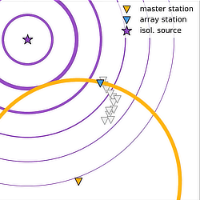
NEW
in review
Continuous isolated noise sources induce repeating waves in the coda of ambient noise correlations
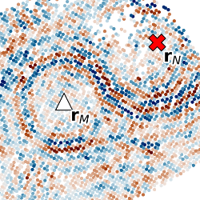
2022, Seismica
Seismic Interferometry in the presence of an isolated source
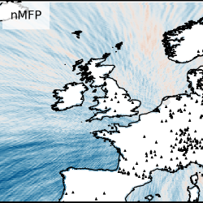
2022, GJI
Matched Field Processing accounting for complex Earth structure: method and review
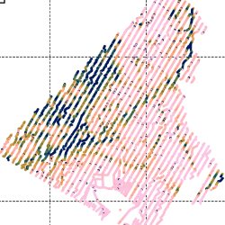
SRL, 2020
Characteristics of the ambient seismic field on a large-N seismic array in the Vienna basin
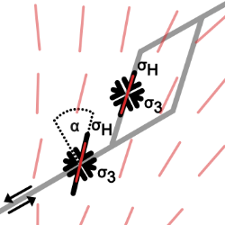
2019, GJI
Azimuthal anisotropy in the wider Vienna basin region: a proxy for the present-day stress field and deformation
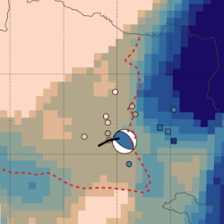
Austrian J. Earth. Sci., 2019
The Alland earthquake sequence in Eastern Austria: Shedding light on tectonic stress geometry in a key area of seismic hazard
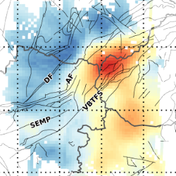
GJI, 2018
Ambient noise tomography of the wider Vienna Basin region
Open Science
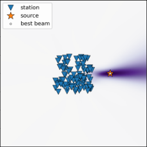
NEW
Fast beamforming in Python
NEW
Repeating waves in the coda of ambient noise correlations
Numerical Matched Field Processing
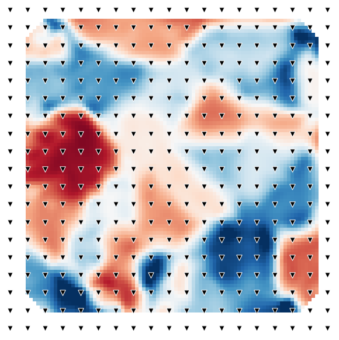
Eikonal Tomography
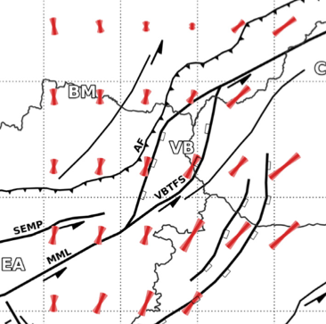
Azimuthal anisotropy of surface waves
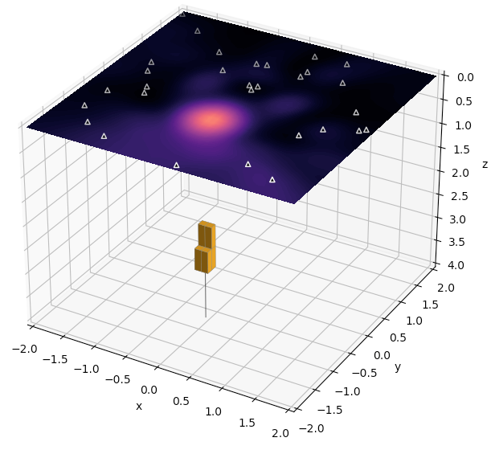
Classical Matched Field Processing
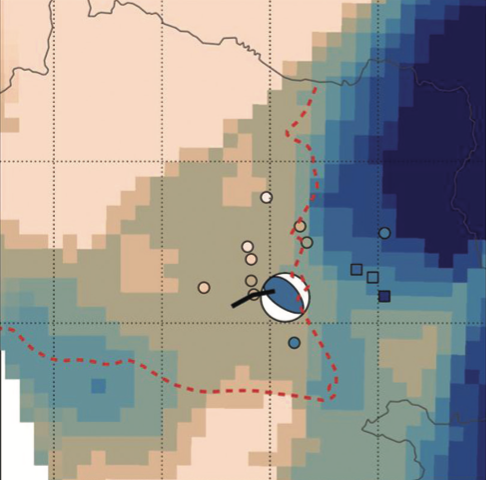
Moment Tensor Inversion